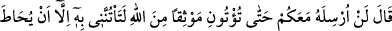
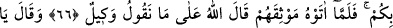
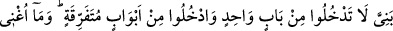
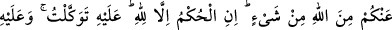
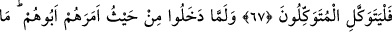
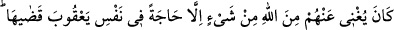
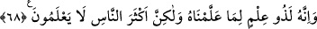

BÜNYAMİN MISIR YOLCUSU
66. (Babaları) dedi ki: “Hepiniz kuşatılıp engellenmedikçe mutlaka onu bana
getireceğinize dâir Allah adına sağlam söz vermeden onu asla sizinle göndermem!”
Ne zaman ki sözlerini verdiler, “Söylediğimize Allah vekildir.” dedi.
67. Sonra şöyle dedi: “Oğullarım! (Şehre) hepiniz bir kapıdan girmeyin, ayrı ayrı
kapılardan girin. Ama Allah’tan (gelecek) hiçbir şeyi sizden savamam. Hüküm,
yalnız Allah’ındır. Ben sadece O’na tevekkül ettim. Tevekkül edenler de O’na
tevekkül etsinler.”
68. Babalarının kendilerine emrettiği yerden (çeşitli kapılardan) girdiler. Gerçi
bu Allah’tan gelecek hiçbir şeyi onlardan savamazdı. Ancak Yâkub içindeki bir
dileği açığa vurmuş oldu. Şüphesiz o, ilim sahibiydi, çünkü ona biz öğretmiştik.
Fakat insanların çoğu bilmezler.
Babaları “dedi ki: “Hepiniz kuşatılıp engellenmedikçe mutlaka onu bana
getireceğinize dâir Allah adına sağlam” yani Allah adıyla ve yeminle pekiştirilmiş
îtimâda şâyân bir “söz vermeden” yaptığınız şeyleri gördükten sonra “onu asla sizinle
göndermem!”
Yâkub (a.s.) oğullarının vereceği sözün Allah adına güvenilir bir söz olmasını şart
koşuyor. Çünkü sözlerin Allah adı anılarak pekiştirilmesi, Allah tarafından izin verilmiş
olması demektir.
“Mutlaka onu bana getireceğinize dâir” Hepiniz kuşatılıp engellenmediğiniz
müddetçe her hâlükârda onu bana getireceğinize yemin etmedikçe “onu asla sizinle
göndermem!”
Hepsinin kuşatılıp engellenmesi, ya kardeşlerini getirmeye hiçbir biçimde güçleri
yetmeyecek bir durumda mağlup ve ezilmiş bir hâle düşmelerinden kinâyedir, ya da